no chinelo
pé esquerdo com a talha dourada de volutas e concha; pé direito com a guirlanda de rosas e a fita azul-colonial.
branco-caiado das igrejas mineiras; tira azul-colonial.
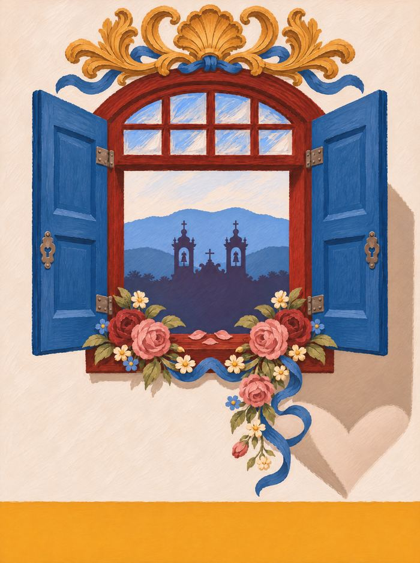
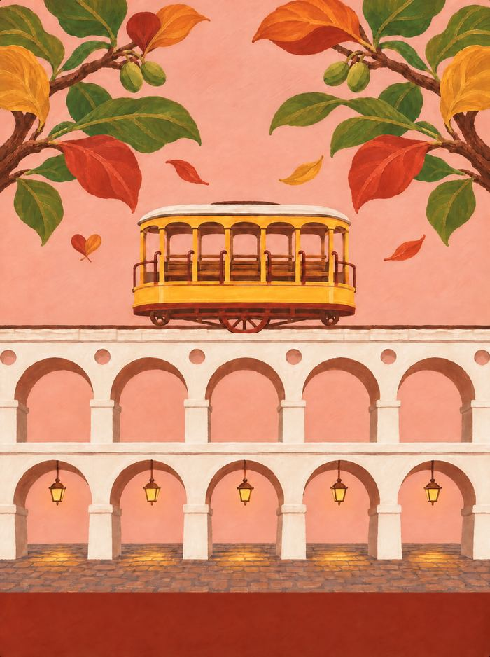
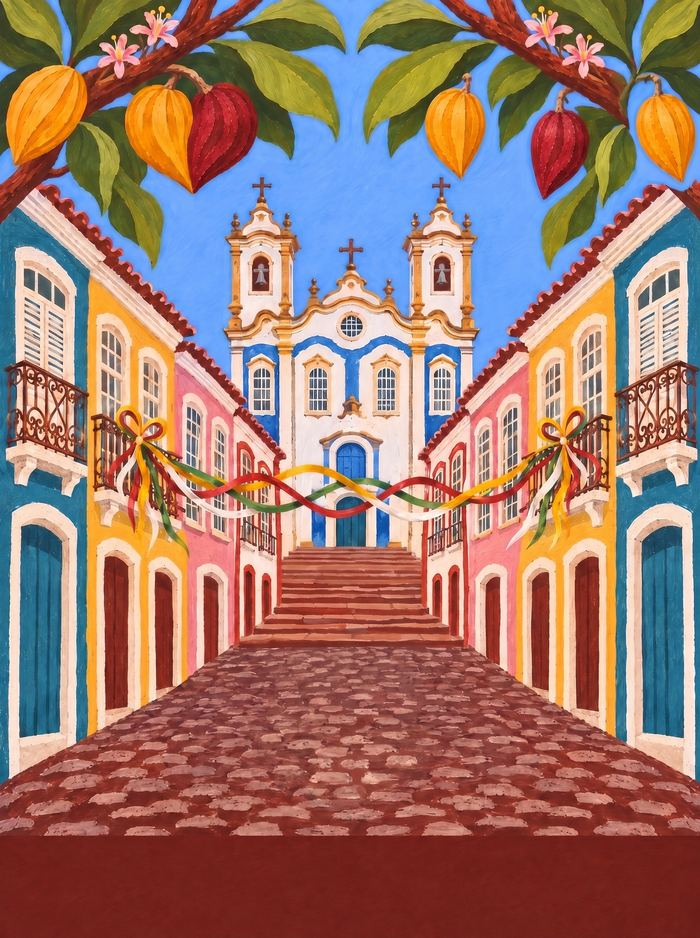
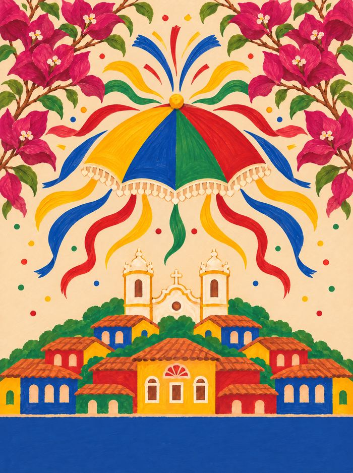
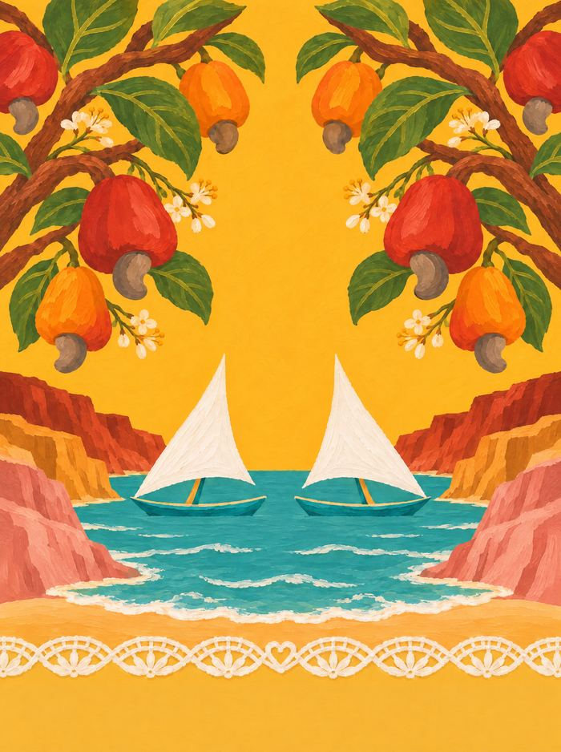
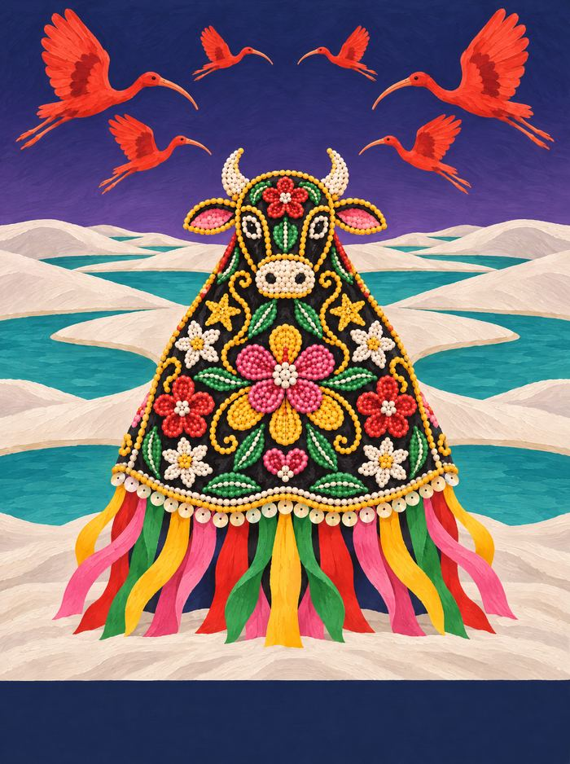
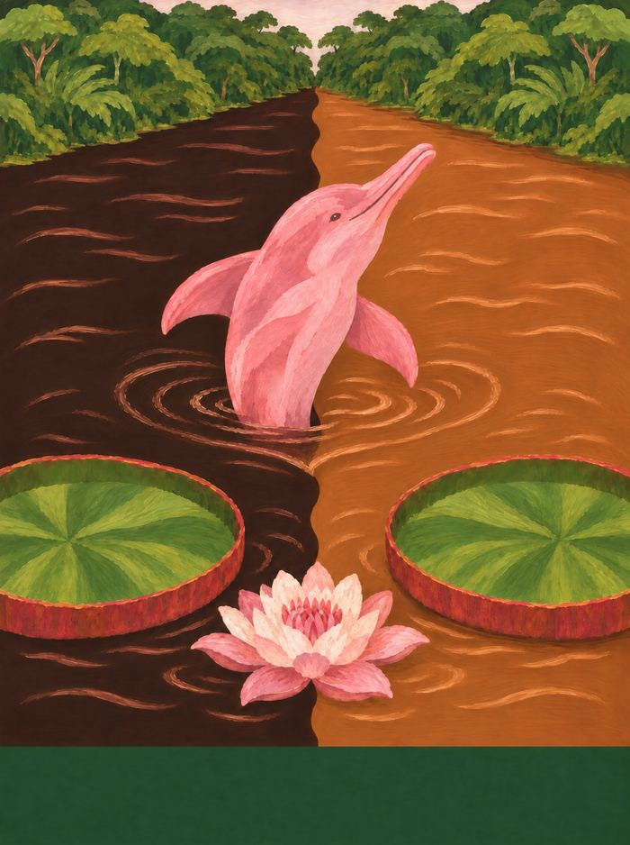
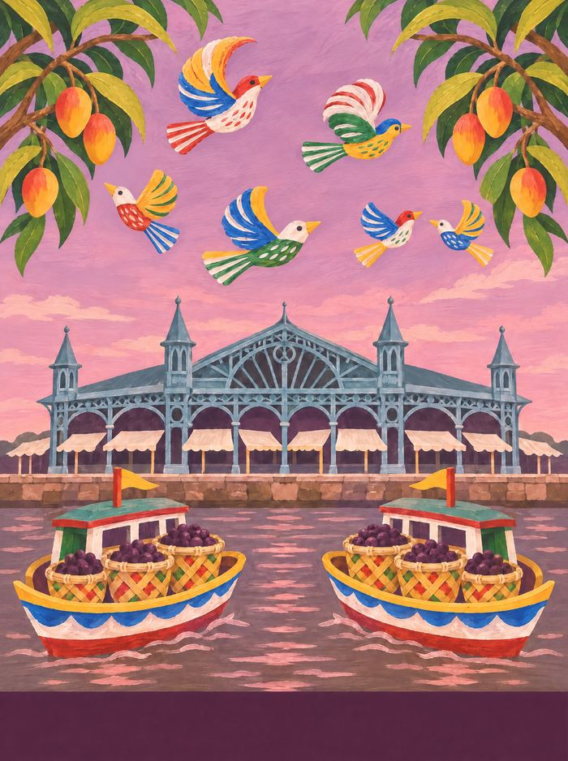
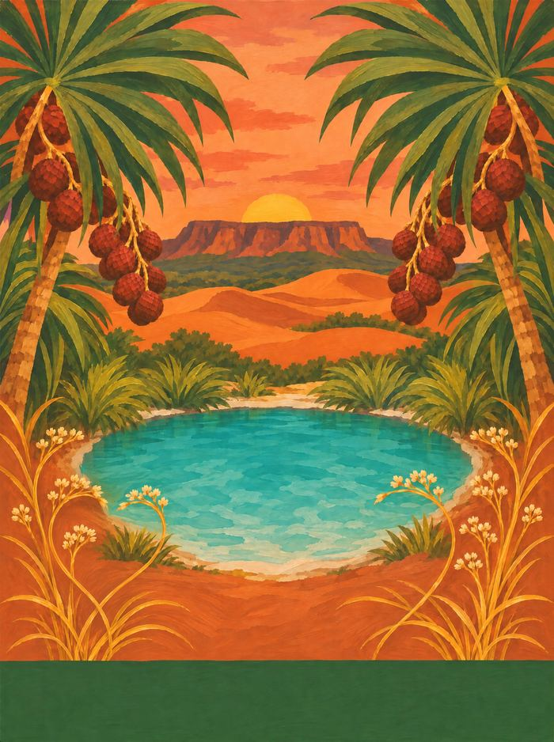
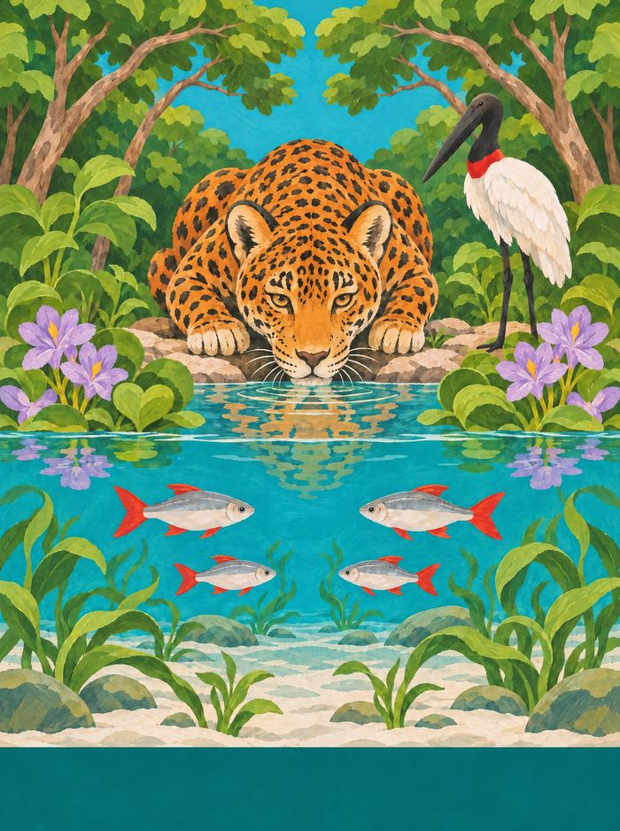
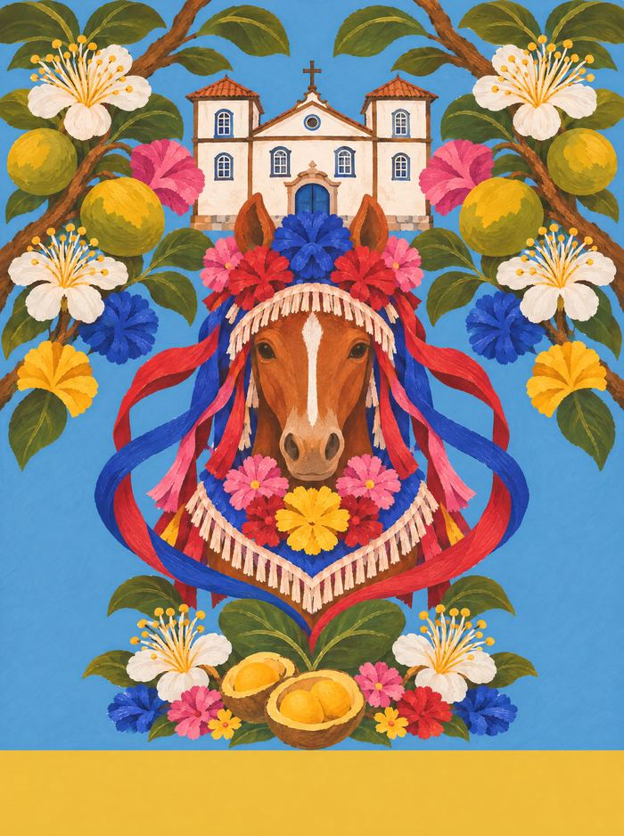
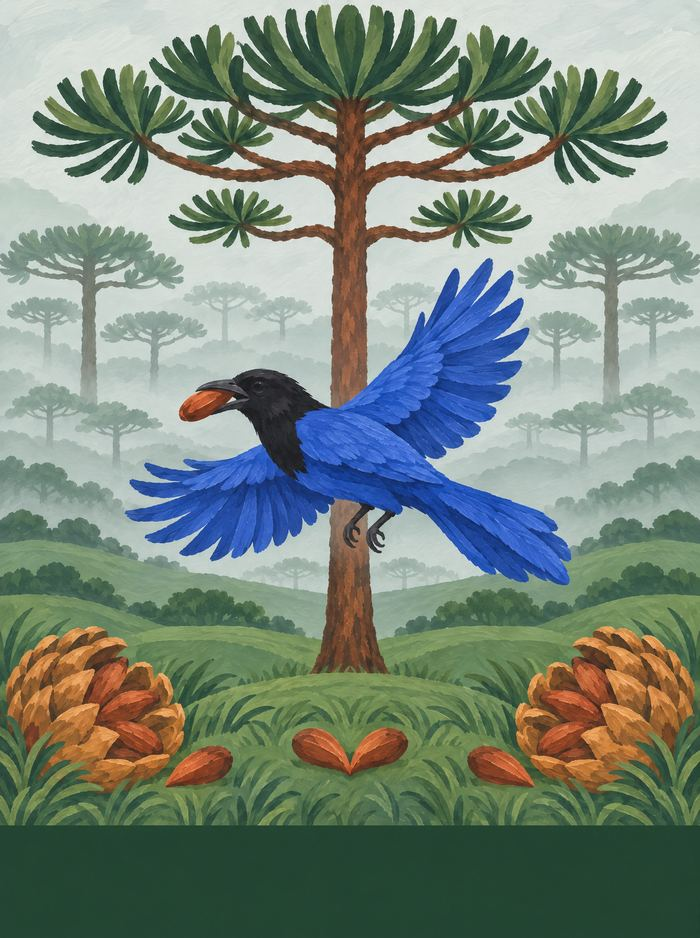
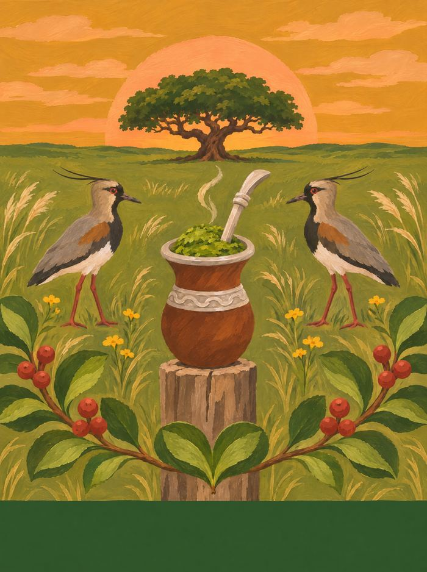
havaianas ♥ FARM Rio · cápsula V2 · projeto de portfólio
A gente saiu do Rio. Foram quatorze estados e quatorze pares de chinelo, e em cada estampa tem um coração que só aparece na segunda olhada.
do Rio para o Brasil, com bem-querer
o reel · 14 estados
01/14
MGBarroco de Minas
a ideia
A collab entre a havaianas e a FARM Rio já existe e já deu certo: arara, bananeira, folhagem, o Rio inteiro na palmilha. A V2 não cria outra marca nem outro logo. Ela entra como uma participação dentro da collab, com a mesma assinatura no calcanhar, e muda só o mapa. Em vez de olhar para o Rio, olha para o Brasil.
Cada estado ganhou um par. O par carrega os elementos do lugar do jeito que a FARM já faz nos chinelos: folha, bicho, fruta e objeto, grandes e recortados pela borda da palmilha. Junto do par vem uma ilustração com o lugar inteiro, para quem é de lá olhar e reconhecer na hora.
A FARM se descreve como “uma escola de estamparia”, e a escola dela sempre foi a viagem: paisagem, festa, arquitetura e arte de rua viram estampa. A V2 segue a mesma regra. O ponto de partida foi sempre a rua, não o cartão-postal.
O coração. Ele nunca é desenhado em cima de nada: aparece quando duas folhas se encontram, quando a cauda da baleia sai da água, quando a franja da sombrinha de frevo termina em pontinhas. É o bem-querer de cada lugar e a única coisa que se repete nos quatorze pares.
a pesquisa
Cada foto só entrou depois de o local aparecer no título, nas tags ou na descrição. Pinhão de Portugal e “capim dourado” que era foto de reunião ficaram de fora.
Feira, mesa, festa, ofício e quintal vêm primeiro. O cartão-postal só entra quando é a âncora do lugar.
Imagem de santo, coroa de Congado e estandarte não viram enfeite. A festa entra pela cor, pela fita e pela flor de papel.


o método
Fotos reais do lugar, com autor e licença, e o local de cada uma conferido.

Um elemento que é daquele estado e de nenhum outro. Sem âncora, o chinelo fica só bonito.

Díptico: o pé esquerdo e o direito contam metades da mesma história. Só elementos.

O lugar inteiro, centralizado, feito com os mesmos elementos do chinelo.

A tira repete uma cor da estampa e a assinatura da collab fica no calcanhar.
o que ficou pelo caminho


O primeiro par de Minas tinha jabuticaba, sabiá e sempre-viva. Era bonito e não dizia Minas: tem jabuticaba no quintal de meio Brasil. Queijo também não servia, porque queijo não nasce em galho. Ficou o barroco, com a talha dourada do Aleijadinho e as rosas do forro do Mestre Ataíde.


A primeira Santa Catarina juntava a Ponte Hercílio Luz e a baleia-franca. Ficou bonito e errado, porque a baleia não aparece no centro de Florianópolis. Ela chega perto da areia nas enseadas do litoral sul. A ilustração foi para Garopaba.
No primeiro lote, quatro estados terminavam numa torre de igreja. A partir do segundo, a regra virou uma cena diferente para cada lugar: rio, mercado, duna, pampa, mata.
Nos primeiros testes, o coração aparecia pintado no brilho da jabuticaba. Saiu tudo. Hoje ele é a franja da sombrinha, a cauda da baleia, duas folhas de amendoeira caindo juntas.
o que a gente ouviu na rua
01 · Sudeste
Barroco de Minas
O ouro das igrejas de Ouro Preto, mas visto de perto: a talha que sobe pelos altares e as rosas que o Mestre Ataíde pintou no forro da São Francisco de Assis.


a sombra da veneziana aberta na parede caiada
caderno de campo
Minas não se mostra de uma vez. Vai aparecendo devagar: na ladeira de pedra que obriga a andar mais lento, na parede caiada com janela azul, vermelho sangue-de-boi e barrado ocre, no ouro que escorre por dentro das igrejas. Em Minas se recebe na cozinha: café passado no pano, queijo curando na tábua, pão de queijo saindo do forno e um “cê aceita mais um?” que não espera resposta. E tem a festa: o Congado desce a rua com fita, tambor e coroa, e a pedra-sabão do Largo de Coimbra vira panela, santo e profeta.
trilhaClube da Esquina (Milton Nascimento e Lô Borges, 1972) · as caixas do Congado na rua · o apito da Maria-Fumaça entre São João del-Rei e Tiradentes
âncora: o barroco mineiro: volutas e conchas douradas como as talhas do Aleijadinho e as guirlandas do forro do Ataíde.


pé esquerdo com a talha dourada de volutas e concha; pé direito com a guirlanda de rosas e a fita azul-colonial.
branco-caiado das igrejas mineiras; tira azul-colonial.
a janela de um casarão de Ouro Preto, coroada pela mesma talha dourada, com a guirlanda no parapeito e as torres da São Francisco ao fundo.
02 · Sudeste
Bonde de Santa Teresa
O Rio que sobe o morro: o bondinho amarelo atravessando os Arcos da Lapa e as amendoeiras que vestem as ruas da cidade de verde, vermelho e laranja.


duas folhas de amendoeira caindo juntas, ao lado do bonde
caderno de campo
A própria FARM diz que o Rio é zero sutil. Mas o Rio que a gente quer mora entre o calçadão e o subúrbio: as ondas pretas e brancas de pedra portuguesa em Copacabana, o mate gelado no galão e o biscoito de polvilho na mão, o guarda-sol listrado fincado na areia, o bonde amarelo subindo Santa Teresa por cima dos Arcos da Lapa. À noite, a roda de samba na Pedra do Sal; de dia, o Mercadão de Madureira, onde tem de tudo, até o que você não sabia que precisava.
trilharoda de samba na Pedra do Sal · Garota de Ipanema (Tom Jobim e Vinicius de Moraes) · o grito do vendedor na areia: “olha o mate!”
âncora: o bondinho amarelo de Santa Teresa, que só existe aqui e ainda roda sobre os Arcos da Lapa.


pé esquerdo com o galho de amendoeira (folhas verdes virando vermelhas e laranja, amêndoas verdes); pé direito com o bondinho amarelo atravessando na diagonal.
rosa-empoeirado das casas de Santa Teresa; tira amarelo-bonde.
os Arcos da Lapa de frente, centralizados, com o bondinho amarelo passando por cima e amendoeiras emoldurando os dois cantos.
03 · Nordeste
Cacau e Fita
O sul da Bahia que dá o cacau e a Salvador que amarra fita no portão do Bonfim, juntos no mesmo par.


dois cacaus, um amarelo e um vinho, de pontas encostadas
caderno de campo
Salvador começa no alto do Pelourinho, com casarões cor de bala (rosa, amarelo, azul, verde) e termina no tabuleiro da baiana, de saia rodada e turbante branco, com cheiro de dendê no ar. As fitas do Senhor do Bonfim balançam amarradas no gradil, cada uma com um pedido; na Lavagem, as baianas sobem a colina com potes de água de cheiro. O tambor ecoa nas ladeiras, o Elevador Lacerda liga a cidade alta à baixa, e no sul do estado o cacau amadurece na sombra da mata.
trilhaO que é que a baiana tem? (Dorival Caymmi) · tambores no Pelourinho · o berimbau da roda de capoeira
âncora: a fita do Senhor do Bonfim, que qualquer brasileiro reconhece de longe.


pé esquerdo com o galho de cacau e um fruto aberto; pé direito com as fitas do Bonfim, sem letreiro, descendo em ondas.
azul do céu de Salvador; tira vermelho-fita.
o Largo do Pelourinho visto de baixo, com a igreja do Rosário dos Pretos no alto, fitas entre as sacadas, uma baiana de costas e o cacau emoldurando a cena.
04 · Nordeste
Passo de Frevo
A sombrinha que abre o carnaval de Recife e Olinda, girando entre as buganvílias das ladeiras.


as pontinhas da franja da sombrinha de frevo
caderno de campo
Pernambuco é chão de frevo: a sombrinha pequena de quatro cores girando na mão do passista, o Galo da Madrugada atravessando o Recife, os bonecos gigantes de Olinda balançando ladeira abaixo. No interior, o caboclo de lança do maracatu rural sacode a cabeleira de papel celofane e o surrão de chocalhos; em Bezerros, a goiva abre a madeira da xilogravura; em Caruaru, o barro do Alto do Moura vira gente. E depois da festa tem bolo de rolo, fino como papel, enrolado com goiabada.
trilhaVassourinhas (marcha de frevo) · o baque do maracatu nação · Chico Science & Nação Zumbi, Da Lama ao Caos
âncora: a sombrinha de frevo, que só existe em Pernambuco.


pé esquerdo com buganvília de Olinda e duas sombrinhas pequenas; pé direito com a sombrinha grande e o celofane do caboclo de lança.
areia morna; tira azul-frevo.
a sombrinha no céu de Olinda, o celofane do caboclo de lança explodindo como fogos e o casario colorido da ladeira embaixo.
05 · Nordeste
Renda ao Vento
O vento do Ceará enche a vela da jangada, balança o caju no cajueiro e passa pelos bilros das rendeiras.


um ponto da renda de bilro, na barra
caderno de campo
O Ceará tem vento. Ele enche a vela triangular da jangada no Mucuripe, empurra as dunas de Jericoacoara e balança o caju pendurado no cajueiro. Nas falésias de Canoa Quebrada e Morro Branco a areia tem dezenas de cores, e em Beberibe ela vira desenho dentro da garrafinha. Na varanda, em Aquiraz, a rendeira cruza os bilros sobre a almofada, num barulhinho de madeira que não para. E a carnaúba dá cera, palha e sombra.
trilhaMucuripe (Fagner e Belchior) · o estalo dos bilros na almofada · o vento nas velas da jangada
âncora: a renda de bilro com a vela da jangada: juntas, só no Ceará (o caju sozinho também é do RN e do PI).


pé esquerdo com o galho de cajueiro e cajus vermelhos e amarelos com a castanha; pé direito com um pedaço de renda de bilro, bilros pendurados e uma vela branca de jangada.
amarelo-sol; tira vermelho-caju.
jangadas de vela triangular no mar turquesa entre as falésias coloridas de Canoa Quebrada, cajueiro emoldurando em cima e uma barra de renda de bilro na base.
06 · Nordeste
Couro de Boi
As noites de São João em São Luís, quando o boi chega bordado em veludo preto, e os guarás vermelhos que pintam o litoral do Maranhão.


uma florzinha de miçanga no bordado do boi
caderno de campo
São Luís é a cidade dos azulejos: casarões do centro histórico vestem fachadas inteiras de azulejo português azul e branco, que espanta o calor. Em junho, a ilha inteira vira terreiro: o boi chega bordado em veludo preto, coberto de miçanga, canutilho e lantejoula, girando ao som das matracas e dos pandeirões. No mangue, o guará pinta tudo de vermelho; e em Barreirinhas, os Lençóis são dunas brancas com lagoas de água doce no meio.
trilhatoada de bumba-meu-boi de matraca · tambor de crioula · reggae nas radiolas de São Luís
âncora: o couro bordado do bumba-meu-boi do Maranhão: veludo preto coberto de miçanga, canutilho e lantejoula.


pé esquerdo com guarás voando e um pousado no galho de mangue; pé direito com um pedaço do couro de veludo bordado, flores e estrelas de miçanga e fitas coloridas.
azul-noite de São João; tira vermelho-guará.
as dunas brancas e as lagoas azuis dos Lençóis Maranhenses, uma revoada de guarás no céu e, no centro, o boi bordado dançando na areia.
07 · Norte
Encontro das Águas
Os dois rios que correm lado a lado sem se misturar perto de Manaus: o par de chinelos é o encontro, um pé de cada água.


os anéis de água em volta do boto
caderno de campo
Manaus nasceu do encontro de dois rios que não se misturam: o Negro, cor de café, e o Solimões, cor de barro, correndo lado a lado por quilômetros. Na cidade, o Teatro Amazonas ergue a cúpula de escamas verde, amarela e azul; no porto, os barcos de recreio partem com redes coloridas penduradas lado a lado. E em junho Parintins se divide em duas cores: o vermelho do Garantido, o boi do coração na testa, e o azul do Caprichoso, o boi da estrela. Na várzea, a vitória-régia abre a folha redonda do tamanho de uma mesa.
trilhatoadas de Garantido e Caprichoso · Vermelho (Chico da Silva) · a buzina do barco saindo do porto de Manaus
âncora: o Encontro das Águas: o pé esquerdo é o rio Negro, cor de café; o direito é o Solimões, cor de barro.


pé esquerdo com o boto-cor-de-rosa subindo na água escura entre vitórias-régias; pé direito com vitórias-régias e uma flor branca virando rosa na água barrenta.
café do rio Negro e caramelo do Solimões; tira rosa-boto.
o Encontro das Águas visto do alto, a linha entre os dois rios no centro, o boto saltando sobre ela e vitórias-régias nos cantos de baixo.
08 · Norte
Revoada de Miriti
Os brinquedos de miriti de Abaetetuba em revoada sobre o roxo do açaí que chega de barco ao Ver-o-Peso.


dois pássaros de miriti que voam um para o outro
caderno de campo
Belém amanhece no Ver-o-Peso: barco chegando com açaí no paneiro, peixe na pedra, garrafada de ervas e cheiro-cheiroso nas barracas de lona. A cidade anda na sombra das mangueiras e, em outubro, para inteira para o Círio de Nazaré: a corda puxada por promesseiros, as flores, a multidão. De Abaetetuba vêm os brinquedos de miriti, barquinhos, cobras, pássaros e bailarinas pintados de cores vivas, feitos do talo da palmeira. E em Icoaraci o barro segue aprendendo com os desenhos marajoaras.
trilhacarimbó (Mestre Verequete, Pinduca) · guitarrada · aparelhagem e tecnobrega de Belém
âncora: o brinquedo de miriti, feito à mão em Abaetetuba e vendido no Círio.


pé esquerdo com pássaros, barquinho e cobra de miriti pintados; pé direito com cachos de açaí e um paneiro cheio.
roxo-açaí; tira vermelho-miriti.
o Mercado de Ferro do Ver-o-Peso visto da baía ao amanhecer, barcos chegando com paneiros de açaí e pássaros de miriti no céu.
09 · Norte
Ouro do Jalapão
O capim que brilha como ouro nas veredas do Jalapão, trançado pelas artesãs da Mumbuca, entre buritis e dunas cor de laranja.


duas hastes de capim dourado que se cruzam
caderno de campo
O Jalapão é de areia cor de laranja, água transparente e capim que brilha como ouro. Nas veredas, o buriti alinha as palmeiras em fila; nos fervedouros, a água borbulha de baixo e não deixa ninguém afundar. Na comunidade quilombola da Mumbuca, as artesãs colhem o capim dourado a partir de 20 de setembro e costuram com a seda tirada do broto do buriti: saem bolsas, mandalas, brincos e chapéus. Ouro que não pesa.
trilhaa Festa da Colheita do Capim Dourado, na Mumbuca · o vento nas dunas · a água borbulhando no fervedouro
âncora: o capim dourado trançado, saber das artesãs quilombolas da Mumbuca.


pé esquerdo com folhas em leque e cachos de frutos do buriti; pé direito com hastes de capim dourado e uma mandala trançada em espiral.
terracota das dunas ao pôr do sol; tira verde-buriti.
as dunas laranja com a Serra do Espírito Santo ao fundo, um fervedouro turquesa no centro cercado de buritis e capim dourado nos cantos de baixo.
10 · Centro-Oeste
Onça de Bonito
A onça-pintada e o tuiuiú do Pantanal sul, sobre a água transparente dos rios de Bonito.


uma folha de aguapé na beira do rio de Bonito
caderno de campo
No Pantanal sul, a água manda: na cheia o campo vira lagoa, na seca o tuiuiú desfila de pescoço vermelho entre os jacarés. A arara-azul passa gritando em pares e a piúva pinta o fim do inverno de rosa. O peão pantaneiro toca a comitiva com o berrante. Em Bonito, o rio é tão transparente que dá para contar os peixes. E em Campo Grande, a Feira Central serve sobá, herança dos imigrantes de Okinawa, enquanto a roda de tereré gelado passa de mão em mão, herança da fronteira com o Paraguai.
trilhaChalana (Mário Zan e Arlindo Pinto) · a viola de Almir Sater · o berrante da comitiva
âncora: a água cristalina de Bonito com as piraputangas: o Pantanal é dividido com o MT, Bonito é só daqui.


pé esquerdo com a onça (cabeça e ombros) entre aguapés; pé direito com o tuiuiú, aguapés e duas piraputangas.
turquesa dos rios de Bonito; tira vermelho-tuiuiú.
o rio transparente de Bonito em corte, metade sobre a água e metade embaixo: a onça bebendo na margem, piraputangas nadando sobre a areia branca, aguapés nos cantos.
11 · Centro-Oeste
Cavalhada
As Cavalhadas de Pirenópolis, quando os cavalos saem enfeitados de flor de papel e fita, com o pequi do cerrado em volta.


duas folhas de pequi que se encontram sob o peito do cavalo
caderno de campo
Em Pirenópolis, maio é tempo de Festa do Divino: as Cavalhadas encenam a batalha de mouros e cristãos, vermelho contra azul, e os mascarados invadem a rua a cavalo com máscaras de boi enfeitadas de flores de papel, fitas e brilho, fazendo o “curucucu”. Na Cidade de Goiás, o casario baixo à beira do Rio Vermelho guarda a casa de Cora Coralina e seus doces. E em toda cozinha goiana tem pequi, amarelo e perfumado, que se come com cuidado por causa dos espinhos.
trilhao “curucucu” dos mascarados · a banda de música na Festa do Divino · moda de viola
âncora: o cavalo enfeitado das Cavalhadas de Pirenópolis.


pé esquerdo com o galho de pequi, frutos e flores de papel; pé direito com a cabeça do cavalo enfeitado de fita azul e vermelha.
azul do céu do cerrado; tira azul-cristão.
o cavalo enfeitado de frente, no centro, com a Matriz de Pirenópolis ao fundo e os pequizeiros emoldurando.
12 · Sul
Gralha e Pinhão
A gralha-azul enterra o pinhão e planta a floresta de araucária sem querer: por isso virou o símbolo do Paraná.


dois pinhões encostados na grama
caderno de campo
O Paraná tem forma de araucária: copa aberta como um candelabro, recortada no céu frio dos Campos Gerais. A gralha-azul enterra o pinhão e planta a floresta sem querer, e por isso virou símbolo do estado. Em Curitiba, a estufa de vidro e ferro do Jardim Botânico brilha no meio dos canteiros, e o inverno pede pinhão cozido. Em Prudentópolis, as igrejas ucranianas têm cúpulas em forma de cebola, e as pêssankas, ovos pintados com cera, guardam desenhos antigos. O trem desce a Serra do Mar até Morretes, onde o barreado cozinha devagar.
trilhao apito do trem da Serra do Mar · o fandango caiçara do litoral · a chaleira do pinhão no fogão
âncora: a araucária com a gralha-azul, árvore e ave símbolo do Paraná.


pé esquerdo com o galho de araucária, a pinha abrindo e pinhões soltos; pé direito com a gralha-azul segurando um pinhão no bico.
verde-neblina da mata de araucária; tira azul-gralha.
a mata de araucárias na neblina dos Campos Gerais, uma araucária grande no centro e a gralha-azul voando com o pinhão.
13 · Sul
Baleia e Ostra
Todo inverno a baleia-franca volta para ter filhote no litoral de Santa Catarina; na ilha, as ostras crescem em fileiras no mar.


a cauda da baleia-franca na enseada de Garopaba
caderno de campo
Florianópolis é ilha açoriana: casinhas coloridas de porta e janela na beira da baía, em Santo Antônio de Lisboa e no Ribeirão da Ilha, onde as ostras crescem em fileiras de boias no mar. Na Lagoa da Conceição, a rendeira cruza os bilros como aprendeu com a avó, que aprendeu com a dela, vinda dos Açores no século XVIII. No verão o boi-de-mamão dança com a Bernunça e a Maricota. A Ponte Hercílio Luz atravessa, branca, para o continente. E de julho a novembro a baleia-franca volta para ter filhote nas enseadas do sul.
trilhaa cantoria do boi-de-mamão · a ratoeira, cantiga de roda açoriana · o bilro batendo na almofada
âncora: a baleia-franca com o filhote, que todo inverno escolhe as enseadas do litoral sul catarinense (Garopaba, Praia do Rosa, Imbituba) como berçário.


pé esquerdo com a baleia-franca e o filhote, a cauda levantada; pé direito com ostras abertas, um pedaço de tarrafa e conchinhas.
azul açoriano das casinhas de Florianópolis; tira azul-oceano.
a enseada de Garopaba, onde a baleia-franca chega perto da praia: a mãe e o filhote no meio da baía, a cauda levantada, canoas de pesca na areia e a tarrafa secando.
14 · Sul
Roda de Chimarrão
A cuia que passa de mão em mão e o quero-quero que guarda o pampa no fim da tarde.


duas folhas de erva-mate ao pé do mourão
caderno de campo
No Rio Grande, a roda começa cedo: a cuia de chimarrão passa de mão em mão, bomba de prata, erva verde e água quente que não pode ferver. No pampa o campo é largo e baixo, e o quero-quero grita guardando o ninho. O gaúcho de bombacha, lenço no pescoço e chapéu monta o cavalo crioulo; no 20 de setembro, o Desfile Farroupilha toma Porto Alegre. Nas Missões, as ruínas vermelhas de São Miguel guardam a história guarani. E o pôr do sol do Guaíba, visto da Usina do Gasômetro, é o mais bonito do mundo (pergunte a qualquer porto-alegrense).
trilhaQuerência Amada (Teixeirinha) · milonga no violão · a gaita de botão no CTG
âncora: a cuia de chimarrão com a bomba de prata e a erva verde.


pé esquerdo com a cuia e galhos de erva-mate com frutinhos vermelhos; pé direito com o quero-quero entre o capim do pampa e florzinhas amarelas.
mostarda do pôr do sol no pampa; tira verde-erva.
o pampa largo ao pôr do sol com um umbu solitário no centro, quero-queros no campo e a cuia em primeiro plano sobre o mourão da cerca.
o fio da coleção

a assinatura
A V2 não ganha logo próprio. A assinatura é a mesma que já vai na palmilha da collab: FARM RIO, o coração e havaianas, empilhados e centralizados no calcanhar.
A cor acompanha o fundo de cada estampa, tom sobre tom. Quando o logo passa por cima de um elemento, ganha um fio fino na cor do fundo para continuar legível.